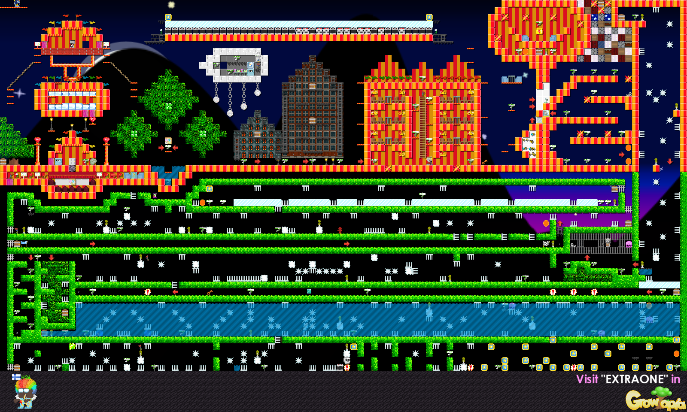
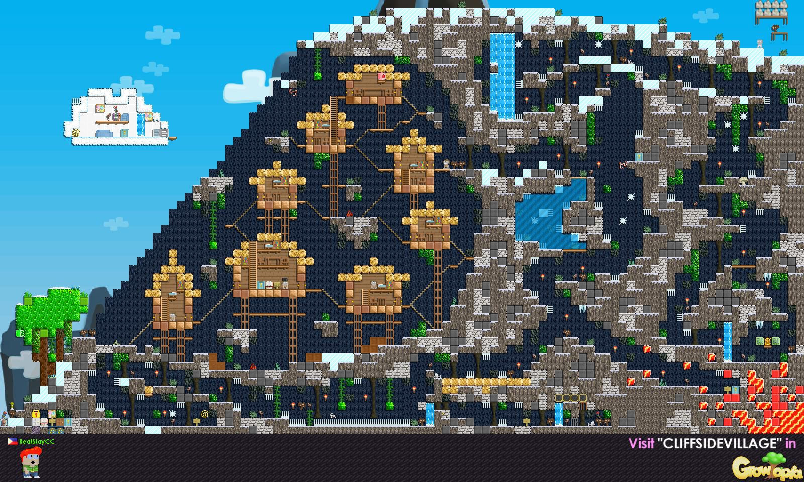
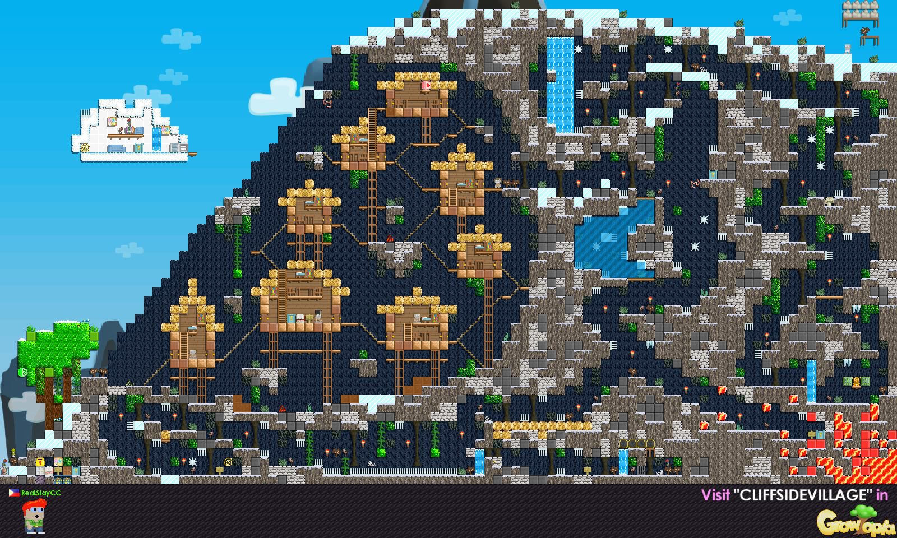
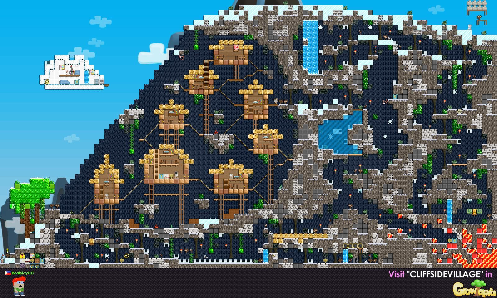

Join a universe of unlimited worlds, all connected to eachother.
Create mind-bending worlds together with friends and fill them with anything your heart desires!
Collecting seeds, growing trees, harvesting and combining seeds to make new ones is the heart of the game. As universes go, Growtopia is filled with everyday heroes and some villains too.
The World of Month


 


Growtopia has growing trees at heart, but over its almost 5-years history, so many more new features hove been added. Colect and combine fabric to sew unique ouflits. Become the best chef using the cooking mechanics. Use Adventure pack to create quest-ike worlds with mazes, traps and puzles to challenge your friends. If's like there's hundreds of games within a game. Who do you want to be today?